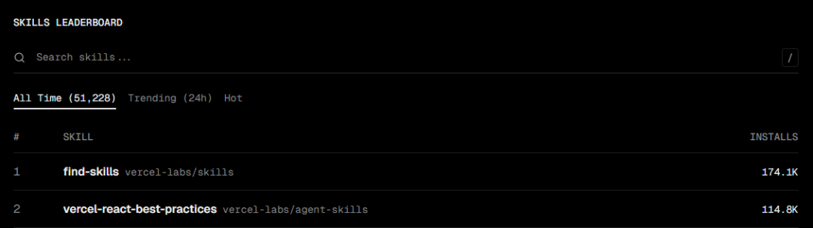

加我进AI讨论学习群，公众号右下角“联系方式”
文末有老金的 开源知识库地址·全免费
先说前提：这个干嘛的
用大白话说：Vercel是全球最大的网页托管平台。
你知道GitHub吗？全球最大的代码托管平台。
Vercel就是网页版的GitHub，全世界数百万网站都用它托管。
服务过哪些大牌？
有字节跳动、Adobe、IBM这些巨头。
现在Vercel把内部多年积累的开发经验，打包成了一个 经验包。
你不用学技术，不用背规则，甚至不用看文档。
只要正常跟AI说话，AI就会自动按照 Vercel的专业标准 来干活。
我们常会发现AI有时候会写出一些质量不太好的代码。
网页加载很慢、手机上显示不对、有些功能用不了。
这些问题不是说AI不懂，而是它不知道"专业的开发标准是什么"。
Vercel Labs开源的agent-skills，就是解决这个问题的。
把Vercel官方多年积累的开发经验，打包成AI可以直接调用的技能包。
用大白话说，就是"专家经验包"。
就像你玩游戏，有个新手向导告诉你怎么操作。
这个技能包就是AI的"新手向导"。
你跟AI说"优化这个网页"，它就会按照Vercel的标准来优化，而不是自己瞎猜。
根据官方介绍，这个项目在GitHub上已经有19k+星，支持Claude、Cursor、Copilot等35+工具。
并且在 Skills.sh 上仅次于老金分享的findskill，位居 第二。

怎么安装？
就一行命令。
打开电脑的终端（Windows用户叫CMD或PowerShell），复制下面这行，回车。
npx skills add vercel-labs/agent-skills等它跑完，就装好了。
装好后怎么用？不用管，它会自动工作。
举个例子：
你跟Claude说"帮我优化这个网页"，Claude就会按照Vercel官方的标准来优化，而不是瞎搞。
就这么简单。
怎么触发技能
装好后，技能会自动触发，不用你手动操作。
但如果你想知道"我说的什么话会触发什么技能"，老金我给你列出来。
请转换为文科生，进行大声背诵。
react-best-practices（性能优化）
说这些话会触发：
消除串行请求
打包体积优化
服务端性能
客户端数据获取
减少重渲染
渲染性能优化
JS微优化React是现在最流行的前端框架，就是写网页用的工具。
这个技能包含40+条优化规则，分成8类：
消除串行请求：让网页加载更快。
打包体积优化：让网页文件更小。
服务端性能：让服务器响应更快。
客户端数据获取：让用户操作更流畅。
减少重渲染：让网页不卡顿。
渲染性能优化：让动画更流畅。
JS微优化：让代码运行更快。
根据GitHub上的反馈，有用户用这个优化网页，加载时间从3.2秒降到1.9秒，快了差不多40%。
web-design-guidelines（网页检查）
说这些话会触发：
检查无障碍
检查可访问性
检查我的UI
检查有没有设计问题
审计一下网页这个技能有100+条检查规则，就像给网页做体检。
检查这些内容：有没有给盲人用的标签、键盘能不能操作、表单有没有验证、图片有没有说明文字、有没有做懒加载。
你写完网页，说一句"检查一下有没有问题"，它就会一条一条列出来。
react-native-skills（手机优化）
说这些话会触发：
优化列表
解决卡顿
优化手机网页
React Native性能优化做手机应用的朋友有福了。
这个技能包含16条规则，专门解决手机网页的性能问题：
列表优化：让长列表不卡。
布局优化：让显示更正确。
动画优化：让动画更流畅。
图片优化：让图片加载更快。
状态管理：让数据管理更清晰。
根据社区反馈，对于一个列表卡顿的问题，技能会直接指出应该用FlashList。
FlashList是一种优化过的列表组件。
composition-patterns（代码结构）
说这些话会触发：
重构这个组件
减少props
优化代码结构
解决boolean props太多的问题AI会帮你重构成更清晰的代码结构。
vercel-deploy-claimable（一键部署）
这个需要注意，使用的是Vercel自身的代理，需要魔法才能登录网站。
说这些话会触发：
部署我的应用
发布到线上
帮我部署
把网页发出去
给个预览链接这个技能最实用。
你跟AI说"帮我把网页发布出去"，它会自动完成四步：
第一步：检测你用什么工具写的。
第二步：打包你的文件。
第三步：上传到服务器。
第四步：给你一个网址。
根据官方文档，从说"发布"到拿到网址，大概30秒搞定。
如果对你有帮助，记得关注一波~
记住：技能是自动触发的，只要正常跟AI对话，它会在合适的时机自动调用对应的技能。
和其他AI技能有什么区别
老金我知道你们会问这个问题。
相同点：
都是打包的专业知识、都是自动调用不用手动操作、都能让AI变得更聪明。
不同点：
Agent Skills是开放的，支持35+种AI工具。
Claude Code Skills是Claude专用的，功能更深但范围窄。
老金我打个比方：Agent Skills像"百度百科"，谁都能用。
Claude Code Skills像"专业词典"，内容深但只有特定人用。
值不值得装
老金我给个直接的建议。
如果你用Claude、Cursor、Copilot写代码：装，很有用。
Vercel是全球最大的网页托管平台，他们的标准很靠谱。
如果你用其他AI工具：也装。
支持35+工具，大概率能用上。
如果你完全不用AI写代码：那就不用装了。
这玩意儿是给AI用的，不是给你直接用的。
老金总结
Vercel这次确实有点东西。
19k星不是偶然，把多年的专业经验打包成AI技能包，这个思路很好。
老金我觉得这代表了一个趋势：从"通用AI"到"专业AI"。
AI再聪明，也需要专业知识。
有了技能包，AI就能"开挂"一样，变成各个领域的专家。
这个方向值得期待。
每次我都想提醒一下，这不是凡尔赛，是希望有想法的人勇敢冲。
我不会代码，我英语也不好，但是我做出来了很多东西，在文末的开源知识库可见。
我真心希望能影响更多的人来尝试新的技巧，迎接新的时代。
谢谢你读我的文章。
如果觉得不错，随手点个赞、在看、转发三连吧🙂
如果想第一时间收到推送，也可以给我个星标⭐～谢谢你看我的文章。
开源知识库地址：
https://tffyvtlai4.feishu.cn/wiki/OhQ8wqntFihcI1kWVDlcNdpznFf